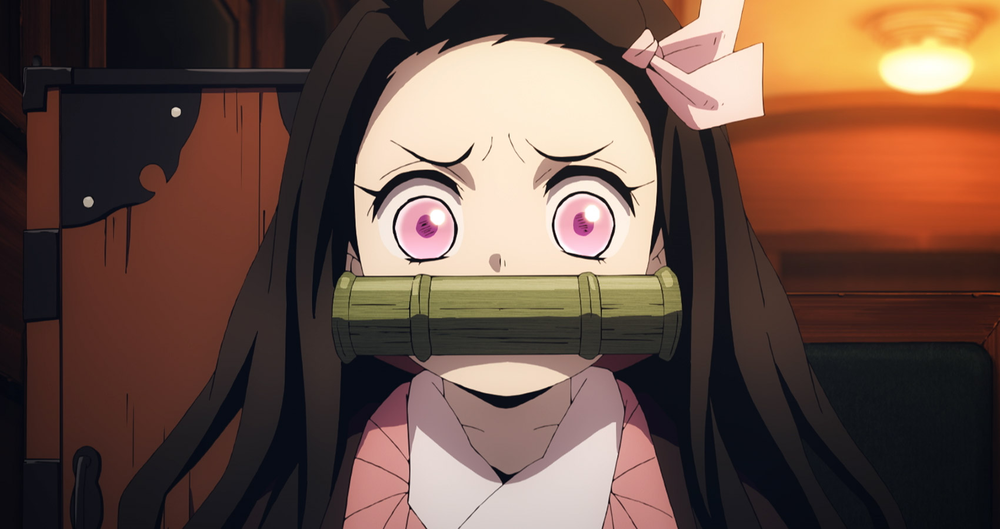

NEZUKO KAMADO
VA: AKARI KITO/ABBY TROTT

Tanjiro’s younger sister, who's been turned into a demon. Despite being a demon, she never attacks humans, thanks to both Urokodaki's hypnotic suggestion, and her own willpower. During the day, to avoid sunlight, she stays inside the wooden box Tanjiro carries on his back. She regains her strength by sleeping.